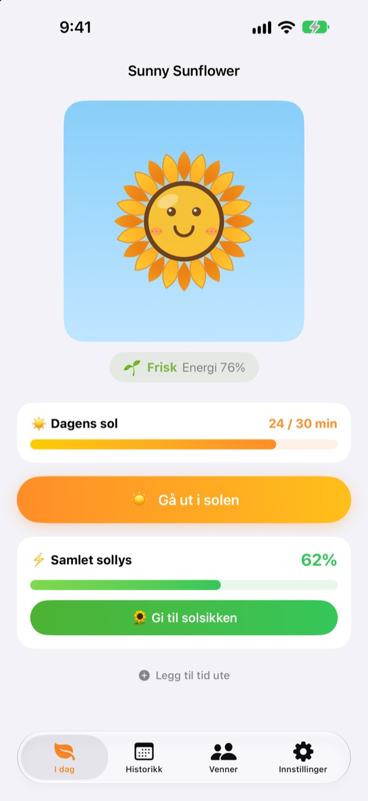
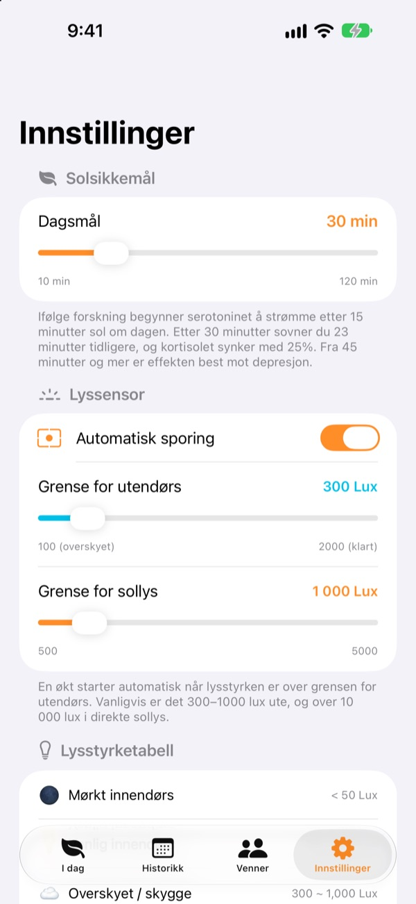
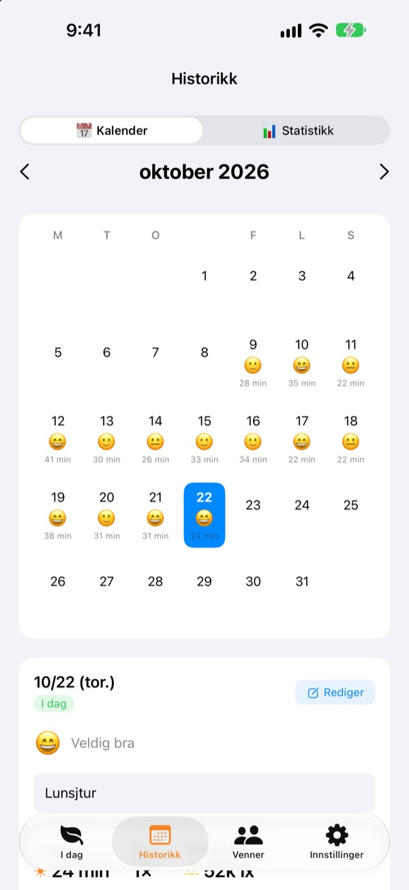
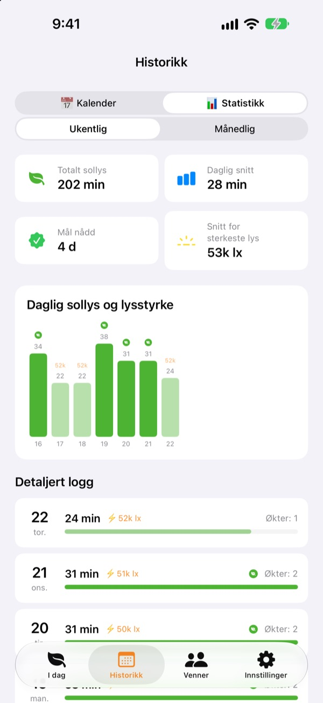

Dagens sol
får solsikken din til å vokse
Bare du går ut, teller tiden i solen opp av seg selv. Gi solsikken sollyset du har samlet, så blir den strålende. Glemmer du den noen dager, begynner den å visne.
Alle funksjoner er gratis. Dataene blir på enheten din.

Samle litt sol
Velg hvor lyst det er og hvor lenge, ta inn sol, og gi den til en solsikke som har begynt å henge med hodet.
Hvor mange minutter sol fikk du i dag?
Noen skritt på vei til jobb, en rask tur ut etter lunsj. Er du inne hele dagen, merker du først om kvelden at du nesten ikke har sett dagslys. Sunny Sunflower viser tiden din ute i tall, og solsikken venter på morgendagens tur.
Gå ut, så måler den selv
Trykk på Gå ut i solen og gå ut. Appen anslår lysstyrken rundt deg ut fra eksponeringsdataene til frontkameraet. Når lyset holder seg på utendørsnivå i rundt 30 sekunder, starter loggingen. Det blir aldri tatt eller lagret bilder.
Deretter slår sensoren seg bare på i 20 sekunder hvert annet minutt for å spare batteri.

Sol og humør, dag for dag
I kalenderen får hver dag sin tid i solen, en humør-emoji og et kort notat. Var du ute uten å måle? Med Legg til tid ute legger du til 5 til 120 minutter.

Uke og måned med ett blikk
Uke- og månedsstatistikk viser hvilke dager du nådde målet, og hvor mye sol du får i snitt. Sett et dagsmål på 10 til 120 minutter, og se rett på forsiden hvor mye som mangler i dag.
Widgeter på Hjem-skjermen og låseskjermen, og Dynamic Island, viser dagens sol og hvordan solsikken har det.

Kom i gang på tre steg
- 1
Sett et dagsmål
Det starter på 30 minutter. I innstillingene kan du velge 10 til 120.
- 2
Gå ut i solen
Trykk på
Gå ut i solenog gå ut med appen åpen. Den spør bare én gang om tilgang til kameraet. - 3
Gi solsikken energi
Trykk på
Gi til solsikkenfor å gjøre det samlede sollyset om til energi.
Slik blir lys til sol
- Under 300 lux
- Svakt lys: teller ikke som tid i solen
- 300–1000 lux
- Ute/overskyet: 1–3 % per 10 minutter
- 1000–10 000 lux
- Sol: 3–33 % per 10 minutter
- Fra 10 000 lux
- Sterk sol: over 33 % per 10 minutter
- Samlet sollys
- minutter × gjennomsnittlig lux ÷ 3000 (høyst 100 % per økt)
- Solsikkens energi
- synker 2,5 % i timen, rundt 60 % i døgnet
Grensen for utendørs kan settes mellom 100 og 2000 lux i innstillingene. Standard er 300 lux.
Spørsmål og svar
Hvordan måler appen sol?
Den anslår lysstyrken rundt deg (belysningsstyrken) ut fra eksponeringsdataene til frontkameraet. Når lyset holder seg på utendørsnivå en stund, starter loggingen av seg selv. Det blir ikke tatt eller lagret bilder.
Bruker det mye batteri?
Når solen er bekreftet, står ikke sensoren på hele tiden. Den våkner i rundt 20 sekunder hvert annet minutt for å måle på nytt, og en enkel tidtaker tar seg av resten.
Solsikken min visner hele tiden.
Solsikken mister 2,5 % energi i timen. Samle sol og trykk på Gi til solsikken. En klar dag holder 15 til 20 minutter i direkte sol til å dekke et helt døgn.
Jeg var ute, men ingenting ble logget.
Bruk Legg til tid ute nederst på forsiden for å legge til 5 til 120 minutter. Hvis loggingen har vanskelig for å starte på overskyede dager, kan du senke grensen for utendørs i innstillingene.
Hvordan fungerer vennefunksjonen?
Når du og en venn er nær hverandre (innen rundt 10 m) og begge måler sol, kobler dere til automatisk. Med en ny person må dere først bekrefte at dere tar sol sammen, deretter skjer det av seg selv. Kronbladene blir fargerike og får tilbake sin egen farge i løpet av 3 dager, og tiden deres sammen lagres i Venner-fanen. Begge trenger appen og tilgang til Bluetooth og lokalt nettverk.
Er det virkelig gratis?
Ja. Ingen reklame, ingen kjøp, alle funksjoner er med. Liker du appen, kan du gi tips, men det låser ikke opp noe ekstra.
Kan jeg ta sikkerhetskopi eller flytte dataene mine?
Alt blir på enheten uten server, og de siste 90 dagene lagres. Det finnes ingen egen eksport, men dataene er med i den vanlige iPhone-sikkerhetskopien i iCloud eller på datamaskinen.
Hvordan sletter jeg alle data?
Trykk på Nullstill data i appens innstillinger, eller slett appen. Det kan ikke angres.
Hvor melder jeg fra om feil?
Skriv til adressen nedenfor, eller opprett en issue på GitHub (github.com/M1zz/SunlightTracker/issues). Enhetsmodell, iOS-versjon og hva som skjedde hjelper mye. Vi svarer vanligvis i løpet av noen dager.
Spørsmål eller tilbakemeldinger? Skriv til leeo@kakao.com.